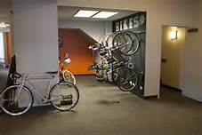

The trip started out when we left to get on the bus. When we were close the the building I heard a thud and thought we might have run over somebody. It turned out to be a flat tire. When we got to the building we waited to get on the elevator. The elevator was very crowded. When we got out we sat down on the carpet and watched their presentation.
The presentation was interesting but also boring. The first half of sitting there was interesting but it started to get tedious when they repeated themselves about what they did. But learning about their career has given me some insight on if I want to do what they do or not. I have decided that it isn’t the career path to me. When they talked about how they got into their career it was very interesting. I would have never thought people would end up in jobs those ways.
Then we toured the building and the stairs were terrible. They invented elevators for a very good reason. We got to see what their work area was like on each floor. It was very quiet and everybody was typing on laptops. Staring at a computer screen all day isn’t my thing. Working in a quiet environment is nice because it’s easier to work in.
When we left to go to the cookout. Thats when the real fun began. The line to get food looked like it stretched for miles. While in line I pulled my phone case back and it snapped in half. So I had a broken phone case for the day. When I got my food I ate it and waited to leave. Then when we left I went outside and it turned out to be completely closed off. So I had to climb the fence. Then when we got on the buss a minute later I threw up all my lunch out the window. On the way back I slept because I felt sick. Then I regretted the fact that I had all that makeup work. I had alot of work to do since I missed to much school.
